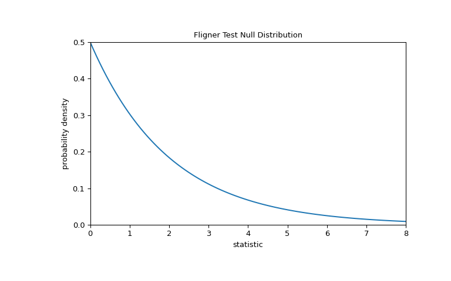

Perform Fligner-Killeen test for equality of variance.
Fligner’s test tests the null hypothesis that all input samples
are from populations with equal variances. Fligner-Killeen’s test is
distribution free when populations are identical [2].
Parameters:
sample1, sample2, …array_like
Arrays of sample data. Need not be the same length.
center{‘mean’, ‘median’, ‘trimmed’}, optional
Keyword argument controlling which function of the data is used in
computing the test statistic. The default is ‘median’.
proportiontocutfloat, optional
When center is ‘trimmed’, this gives the proportion of data points
to cut from each end. (See scipy.stats.trim_mean.)
Default is 0.05.
axisint or None, default: 0
If an int, the axis of the input along which to compute the statistic.
The statistic of each axis-slice (e.g. row) of the input will appear in a
corresponding element of the output.
If None, the input will be raveled before computing the statistic.
nan_policy{‘propagate’, ‘omit’, ‘raise’}
Defines how to handle input NaNs.
propagate: if a NaN is present in the axis slice (e.g. row) along
which the statistic is computed, the corresponding entry of the output
will be NaN.
omit: NaNs will be omitted when performing the calculation.
If insufficient data remains in the axis slice along which the
statistic is computed, the corresponding entry of the output will be
NaN.
raise: if a NaN is present, a ValueError will be raised.
keepdimsbool, default: False
If this is set to True, the axes which are reduced are left
in the result as dimensions with size one. With this option,
the result will broadcast correctly against the input array.
A robust parametric test for equality of k variances
Notes
As with Levene’s test there are three variants of Fligner’s test that
differ by the measure of central tendency used in the test. See levene
for more information.
Conover et al. (1981) examine many of the existing parametric and
nonparametric tests by extensive simulations and they conclude that the
tests proposed by Fligner and Killeen (1976) and Levene (1960) appear to be
superior in terms of robustness of departures from normality and power
[3].
Beginning in SciPy 1.9, np.matrix inputs (not recommended for new
code) are converted to np.ndarray before the calculation is performed. In
this case, the output will be a scalar or np.ndarray of appropriate shape
rather than a 2D np.matrix. Similarly, while masked elements of masked
arrays are ignored, the output will be a scalar or np.ndarray rather than a
masked array with mask=False.
References
[1]
Park, C. and Lindsay, B. G. (1999). Robust Scale Estimation and
Hypothesis Testing based on Quadratic Inference Function. Technical
Report #99-03, Center for Likelihood Studies, Pennsylvania State
University.
https://cecas.clemson.edu/~cspark/cv/paper/qif/draftqif2.pdf
Fligner, M.A. and Killeen, T.J. (1976). Distribution-free two-sample
tests for scale. ‘Journal of the American Statistical Association.’
71(353), 210-213.
Park, C. and Lindsay, B. G. (1999). Robust Scale Estimation and
Hypothesis Testing based on Quadratic Inference Function. Technical
Report #99-03, Center for Likelihood Studies, Pennsylvania State
University.
[4]
Conover, W. J., Johnson, M. E. and Johnson M. M. (1981). A
comparative study of tests for homogeneity of variances, with
applications to the outer continental shelf biding data.
Technometrics, 23(4), 351-361.
B. Phipson and G. K. Smyth. “Permutation P-values Should Never Be
Zero: Calculating Exact P-values When Permutations Are Randomly
Drawn.” Statistical Applications in Genetics and Molecular Biology
9.1 (2010).
Ludbrook, J., & Dudley, H. (1998). Why permutation tests are
superior to t and F tests in biomedical research. The American
Statistician, 52(2), 127-132.
Examples
In [5], the influence of vitamin C on the tooth growth of guinea pigs
was investigated. In a control study, 60 subjects were divided into
small dose, medium dose, and large dose groups that received
daily doses of 0.5, 1.0 and 2.0 mg of vitamin C, respectively.
After 42 days, the tooth growth was measured.
The small_dose, medium_dose, and large_dose arrays below record
tooth growth measurements of the three groups in microns.
The value of the statistic tends to be high when there is a large
difference in variances.
We can test for inequality of variance among the groups by comparing the
observed value of the statistic against the null distribution: the
distribution of statistic values derived under the null hypothesis that
the population variances of the three groups are equal.
For this test, the null distribution follows the chi-square distribution
as shown below.
>>> importmatplotlib.pyplotasplt>>> k=3# number of samples>>> dist=stats.chi2(df=k-1)>>> val=np.linspace(0,8,100)>>> pdf=dist.pdf(val)>>> fig,ax=plt.subplots(figsize=(8,5))>>> defplot(ax):# we'll reuse this... ax.plot(val,pdf,color='C0')... ax.set_title("Fligner Test Null Distribution")... ax.set_xlabel("statistic")... ax.set_ylabel("probability density")... ax.set_xlim(0,8)... ax.set_ylim(0,0.5)>>> plot(ax)>>> plt.show()

The comparison is quantified by the p-value: the proportion of values in
the null distribution greater than or equal to the observed value of the
statistic.
If the p-value is “small” - that is, if there is a low probability of
sampling data from distributions with identical variances that produces
such an extreme value of the statistic - this may be taken as evidence
against the null hypothesis in favor of the alternative: the variances of
the groups are not equal. Note that:
The inverse is not true; that is, the test is not used to provide
evidence for the null hypothesis.
The threshold for values that will be considered “small” is a choice that
should be made before the data is analyzed [6] with consideration of the
risks of both false positives (incorrectly rejecting the null hypothesis)
and false negatives (failure to reject a false null hypothesis).
Small p-values are not evidence for a large effect; rather, they can
only provide evidence for a “significant” effect, meaning that they are
unlikely to have occurred under the null hypothesis.
Note that the chi-square distribution provides an asymptotic approximation
of the null distribution.
For small samples, it may be more appropriate to perform a
permutation test: Under the null hypothesis that all three samples were
drawn from the same population, each of the measurements is equally likely
to have been observed in any of the three samples. Therefore, we can form
a randomized null distribution by calculating the statistic under many
randomly-generated partitionings of the observations into the three
samples.
>>> ref.pvalue# randomized test p-value0.4332 # may vary
Note that there is significant disagreement between the p-value calculated
here and the asymptotic approximation returned by fligner above.
The statistical inferences that can be drawn rigorously from a permutation
test are limited; nonetheless, they may be the preferred approach in many
circumstances [7].
Following is another generic example where the null hypothesis would be
rejected.
Test whether the lists a, b and c come from populations
with equal variances.